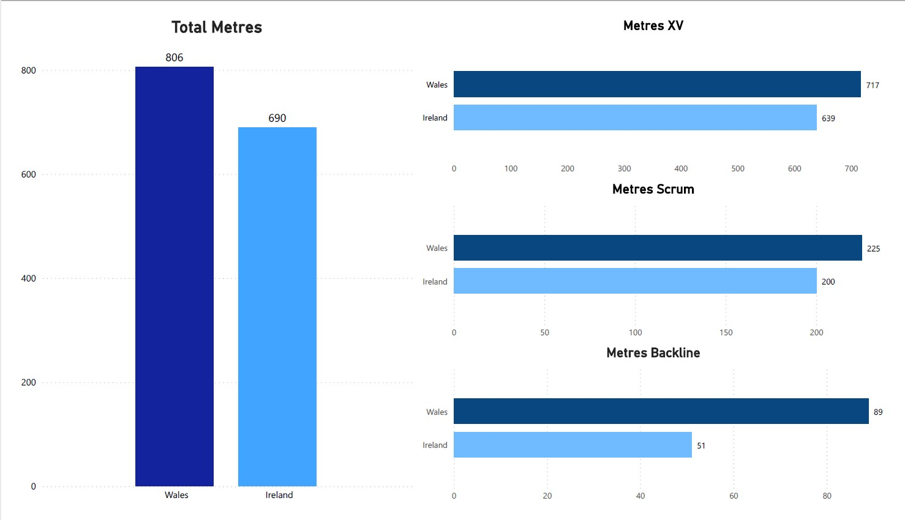
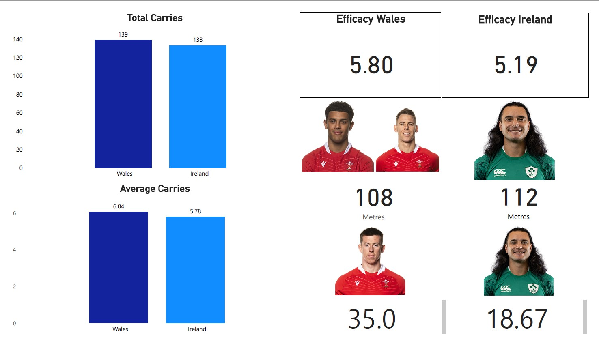

SIX NATION ROUND 1
By Tommaso Gagliardi BA,MSc
Six Nations Round 1 is gone. What can be taken from it?
Wales - Ireland has made a lot of disappointment between Welsh fan. In many analyses the attack strategy was criticized. But did Wales really lost there the match?
Actually Wales performed better in the advancement than Ireland if we look at the absolute numbers. During the match Wales gained a total of 806 metres, above the 690 of the Irish side. A difference 116 metres in advancement would suggest a better capacity of the Dragons to take the advantage line. But a first interesting insight is given by the distribution of these gains between players. The initial XV gained 89% of total for Wales, against 93% of the Irish team. The distribution indicates that almost the entire concentration of metres gains arrived from the initial pack of players. Here’s the first clue of the final result: was this a strategy? The evolution of the match seems to indicate that the Irish team wanted to take the maximum advantage possible in the initial confrontation, while Wales was forced to have less competitive backups.
In both sides scrum and backs gained more than their backups.

As indicated before, in the absolute advantage was favorable for Wales. But what about the efficacy?
Even here, on one indicator. Wales was ahead: 139 carries against 133. A slight advantage, but also a point in favor of the commitment of the Dragons, who brought the ball more times against the opposite defence.
But here's the point: Ireland had more equilibrium in the ratio metres/carries. Wales had an average efficacy of 5.8, with a standard deviation of 6.97, while Ireland had 5.1 and 3.74. Considered the entire team, Welsh players gained more metres for each charge against the defensive line. On the other side, Wales had a significant differentiation between its individual performance. This implies that the Dragons had to rely more on single initiatives, while Ireland could rely on a uniform distribution for the capacity of gaining ground. A stronger collective performance reduced the dependence from single players.
So what happened? Simple as that, Ireland count on a collective performance. Only James Lowe was an outlier, both for metres gained and carries: 112, 18.67. At the opposite, Wales relied more on single players who had peaks of performance if compared to the teammates: Beard, Dyer, Williams, Hawkins. The isolation of Welsh attackers became unsustainable during the round and increased the gap between the sides progressively.
Wales carried and gained more, but with individualities, while Ireland had a uniform support.
